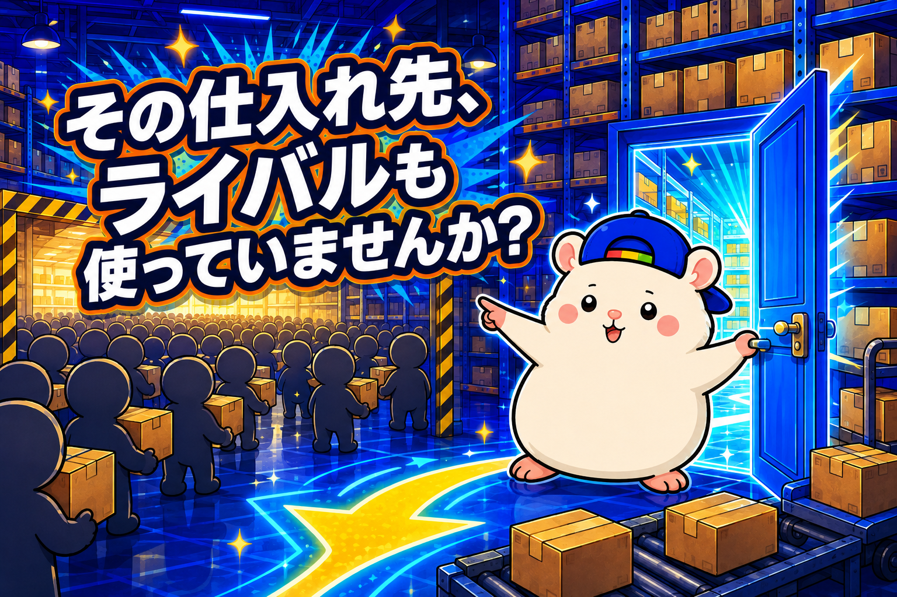
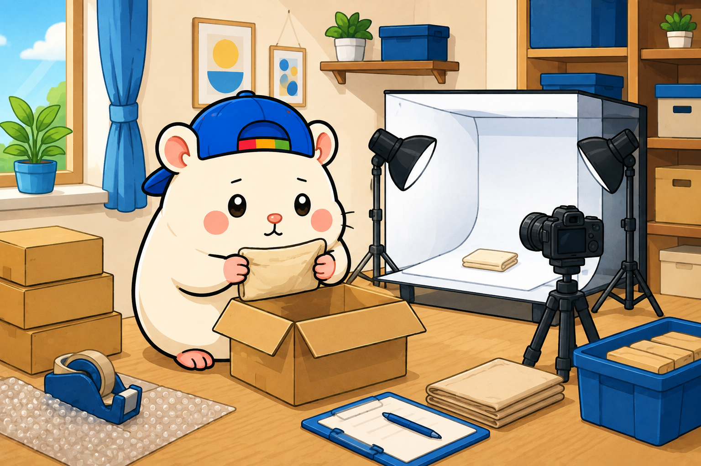

仕入れ先が同じで、同じ商品を出品するなら、勝負は値下げしか残りません。
これは無在庫でも有在庫でも同じです。
みんなが使えるサイトから仕入れて、みんなが出している商品を出す。
すると、買い手が見るのは値段だけになります。
だから最安値をとって出品する。
安値合戦になって、パクってパクられ、利益が薄くなる。
ぼくの店も、ずっとその中にいました。
なので、新しい仕入れ先を開拓しました。
やり方をぜんぶ書きます。
仕入れ先が同じだと、値下げしか残らない
まず、なぜ仕入れ先が大事なのか。
同じところから仕入れている店が10軒あれば、同じ商品が10個ならびます。
写真も、説明も、似たようなものになります。
同じ仕入れ商品を参照しているからです。
そうなると、買い手が選ぶ基準は値段だけです。
ここから逃げる道は、2つあります。
1つは、切り口を変えること。
たとえば、ぬいぐるみを売っているとします。
ふつうのぬいぐるみで戦うのではなく、マニアックなもの、年代物のものに寄せていく。
同じ仕入れ先でも、深く掘れば、ほかの人が見ていない商品は見つかります。
もう1つが、今日の本題です。
そもそも、ほかの人が使っていない仕入れ先を持つこと。
仕入れ先の開拓を、AIに丸投げしました
ぼくはClaude Codeを使っています。
Claude Codeに、こう投げました。
- 自分のeBayストアのURL
- こういう商品を扱っています
- いまはこういうところから仕入れています
- 売れたらそこで買って、お客さんに送っています
- ほかのセラーと差別化したいので、新しい仕入れ先を開拓したい
- どんな仕入れ先が考えられるか、ぜんぶ調べてほしい
これだけです。
自分の店の状況を先に説明してから頼むのが大事で、そうしないと一般論しか返ってきません。
返ってきたのは、候補のECサイトの一覧でした。
実店舗も混ざりますが、そこは外します。
無在庫でやるなら、ネットで在庫が見えるところでないと回りません。
そのあと、良さそうな順にランクを付けてもらいました。
ここまで、ぼくがやったのは指示を書くことだけです。
候補は、上から順に規約を読む
一覧ができたら、上から1つずつ調べます。
見るのは「そこで仕入れたものを、eBayに出していいか」です。
規約に書いてあれば、それに従う。
ここは正直に書きます。
規約にはっきり書いていないサイトもあって、そこはグレーです。
ぼくは、OKだと文書で返ってきたところしか使いませんが、やるかどうかは、最後は自分で判断してください。
片っ端から調べる、というのがコツです。
1つ2つで諦めると、結局みんなと同じところに戻ります。
業者向けのサイトは、扉が閉まっている
こうやって探すと、業者向けのECサイトが出てきます。
こういうサイトは、たいてい扉が閉まっています。
- 会員制で、まず登録が必要
- 事前に審査がある
- 申込書を書いて、やり取りをして、やっと入れる
面倒です。
でも、この面倒くささがそのまま参入障壁になります。
だれでも入れるサイトは、だれでも同じ商品を出せます。
ぼくも申し込んで、書類を書いて、やり取りをして、使えるようになりました。
「画像は使わないでください」と言われました
入れたあと、条件を確認しました。
返ってきた答えは、こうです。
- 輸出はOK
- 仕入れて売る、卸としての利用もOK
- ただし、サイトの画像を使うのはNG(著作権があるため)
無在庫は、仕入れ先の画像を使って出品します。
その画像が使えないなら、無在庫では出せません。
なので、この仕入れ先だけ有在庫でやることにしました。
自分で仕入れて、自分で写真を撮る。
そうすれば、画像の問題は消えます。
断られた条件に合わせて、売り方のほうを変えました。
最初の数件は、ぼくが自分でやります

有在庫のゴールは決まっています。
外注さんの家に直接送ってもらって、撮影・保管・発送までお願いする形です。
でも、いきなりそれはやりません。
まず、ぼくが自分でやります。
- 自分の家に送ってもらう
- どんな状態で、どんな箱で届くのかを見る
- 自分で写真を撮る
- AIに出品してもらう
- 売れたら、自分で梱包して送る
1回やると、つまずくところがわかります。
それをマニュアルにして、外注さんに渡す。
順番はこれです。
きのう、1回目を発注しました。
11点、約5万円。
今週、うちに届きます。
ぼくの店は梱包発送だけが人間で、あとはAI社員20名でやっています。
そこに「撮影」という人間の仕事が1つ増えます。
それでも、ほかの店が出せない商品が出せるなら、増やす価値はあります。
もう1つの探し方: 出品者の名前から辿る
昔からある方法も、書いておきます。
オークションサイトやフリマサイトを見ていると、出品者名に会社の名前が入っていることがあります。
業者さんが、個人向けにも出しているパターンです。
その会社を調べると、自社のECサイトを持っていることがあります。
そこから直接、仕入れの交渉をする。
昔は、これを手で1件ずつやっていました。
いまは、その出品者一覧をAIに渡して調べてもらえます。
手作業だったものが、指示1回になりました。
まとめ: 仕入れ先は、探した人にだけ増える
- 同じ仕入れ先で戦うと、値下げしか残らない
- 自分の店の状況を書いて、AIに「考えられる仕入れ先をぜんぶ調べて」と頼む
- 候補は上から順に規約を読む。書いていなければ問い合わせる。OKが出たところだけ使う
- 業者向けのサイトは登録が面倒。その面倒くささが、そのまま参入障壁になる
- 条件が合わなければ、売り方のほうを変える(画像NG→有在庫へ)
仕入れ先は、待っていても増えません。
でも、探すのは、もう自分の仕事ではなくなりました。
あなたの仕入れ先、ライバルと同じですか?
ちがう扉、まだ開けられます。
台帳に書いておこう🐹
▼中の人🏠(レンタルスペース23部屋・売上1.5億)のレンスペ実録
https://note.com/rentalspace_kiku
▼ブログ(eBay×レンスペ、全記事まとめ)
https://rental-space.net
▼この店のやり方は、ぜんぶ1冊にまとめてあります
リサーチ・出品・値付け・顧客対応まで、初月利益18万6,673円を出した実店舗の記録と手順を全部書いた教科書です。
読んだその日から、AI社員の作り方をそのまま真似できます。
『AI × eBay輸出の教科書 — 梱包以外、ぜんぶAI』(公式サイト最安 ¥8,800)
https://rental-space.net/kyokasho/ebay/
※先行5部限定の価格です。以降、2,000円ずつ値上げします。